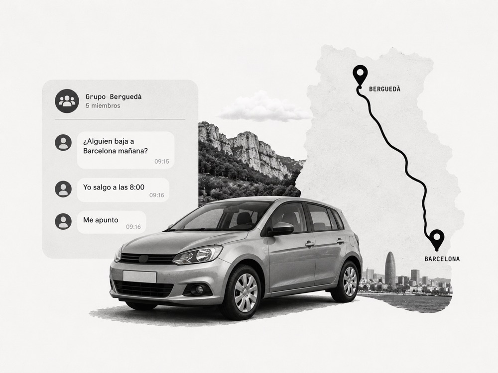

No investigo para confirmar ideas, sino para evitar construir la equivocada.
Combino una mirada crítica y creativa con investigación, diseño y estrategia de producto para cuestionar supuestos, comprender comportamientos y convertir evidencia en decisiones que reduzcan riesgos.
- 01 Entender
- Comportamientos, necesidades y contexto real
- 02 Pensar
- Qué evidencia hace falta para reducir el riesgo
- 03 Construir
- Con evidencia, no con suposiciones
Casos en los que la investigación cambió el rumbo del producto
Casos en los que la investigación ayudó a cuestionar hipótesis, identificar oportunidades y orientar decisiones de producto.
La barrera no era la edad: hacer más comprensible una experiencia de viaje en RV
La primera lectura del equipo fue que la edad explicaba la dificultad. La investigación mostró que las personas necesitaban referencias conocidas para empezar, orientarse y avanzar en RV, al margen de su edad.

PujobaixoDe un experimento en WhatsApp a una red local escalable
Creamos un grupo de WhatsApp para observar cómo aparecían la oferta, la demanda y las coincidencias en un contexto real, antes de transformar esos aprendizajes en una red local escalable.
El problema no era descubrir. Era el envío.
Agile Monkeys estaba explorando un motor de recomendaciones con IA para compradores de vinilos. La investigación redirigió el concepto hacia un problema de compra más relevante.
Investigar antes de construir
Mi formación en Bellas Artes desarrolló una mirada crítica para observar comportamientos, detectar patrones y cuestionar supuestos antes de diseñar. Esa capacidad evolucionó hacia la investigación de usuarios aplicada a productos travel, movilidad, marketplaces y experiencias inmersivas.
He trabajado conectando necesidades, decisiones de producto y viabilidad técnica. Mi experiencia como Product Owner me permite transformar hallazgos en prioridades, alinear equipos y definir qué evidencia necesitamos para reducir incertidumbre, evitar soluciones prematuras y construir con propósito.
Capacidades
Explorar y comprender
- Entrevistas semiestructuradas
- Investigación generativa
- Desk research y análisis de contexto
- Jobs to Be Done
- Mapeo de actores y necesidades
- Identificación de comportamientos y barreras
Evaluar y validar
- Pruebas de usabilidad
- Concept testing
- Evaluación de prototipos
- Análisis de journeys y flujos
- Auditorías heurísticas
- Validación de hipótesis de producto
Sintetizar y generar impacto
- Análisis temático
- Affinity mapping
- Construcción de insights
- Definición de oportunidades
- Workshops de alineación
- Recomendaciones priorizadas y accionables
Convirtamos preguntas en mejores decisiones
Estoy abierto a oportunidades de UX Research y Product Research en equipos que valoren la curiosidad, la evidencia y la colaboración.